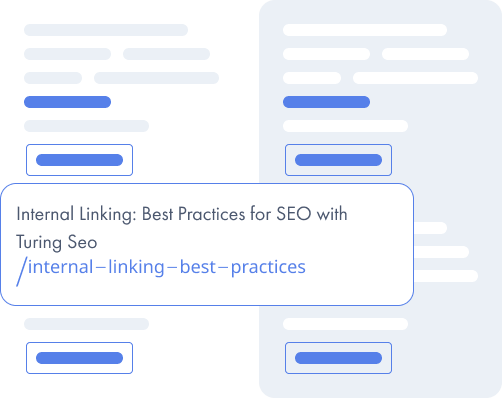
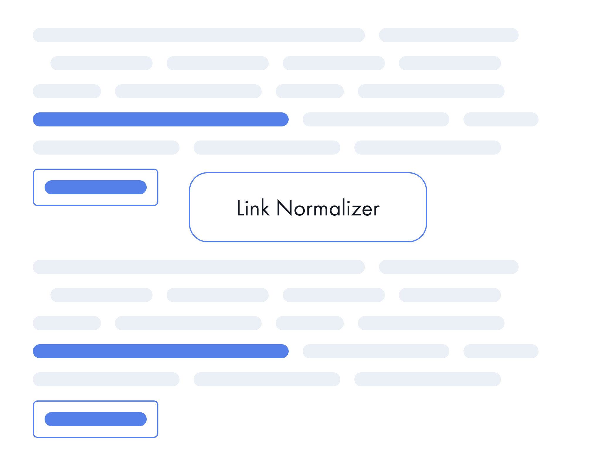
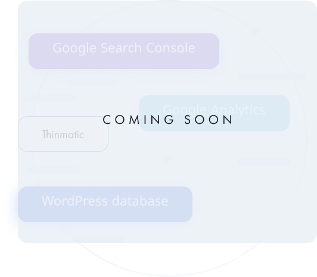

At Turing SEO, we understand that optimizing a
website can be a daunting and time-consuming task - because as SEOs ourselves, we’ve been there just like you.
That’s why we’re introducing our new plugin designed to make the process as easy and efficient as possible.
Turing SEO is the perfect solution for busy SEO and content teams who want to make bulk changes quickly and
easily. And our philosophy is to provide you the options you need to Get SEO Done whether that be through
curation or automation.

Link Cleaner
TuringSEO LinkCleaner is the tool that helps you manage your website's links easily. You
can use it to replace redirecting links with their final destinations, update links that 404 and 500, and
change anchor text in bulk across your website. We have different options for people who want to do
everything themselves or those who want to automate things with rules. LinkCleaner is perfect for all your
link needs and we even have methods to make updates as frequently as you need them.
Link Normalizer
Duplicate content can be a big problem for some websites and while there can be multiple
causes, one of the most common is the inconsistent use of SSL, subdomains, mixed case and trailing slashes
in internal URLs. Some websites don’t even bother to address this issue. Others use complicated redirect
strategies. LinkNormalizer puts the SEO in control. You decide what the URL standard should be and we
standardize the URLs on your website.

Thinmatic
What do you call a page that receives no traffic or page views? We call it vanity.
Some credible estimates show that more than 90% of all pages available to search engines receive no traffic
whatsoever. Nearly another 5% receive less than 10 visits a month. What kind of SEO signal do you think
having a website like this sends to Google?
Most website owners spend hours pouring over the performance of pages that receive traffic or page views and
virtually none on those that get none.
THINMATIC uses your WordPress database, Google Analytics and Google Search Console data to help you identify
which pages are not useful to your business. THINMATIC will then move these pages into a new unpublished
state (and with Link Cleaner, remove/redirect any inbound links to these pages).

Simple to Install
Setup is as simple as installing the plugin and activating it and start Getting SEO
Done
Easy to Use
Start by segmenting your site into URL collections that you want to handle in similar
ways
Full Control
We realize that no two SEOs work quite the same way. So giving you options that meet
your needs is our priority
Continuous Improvement
SEO is never done. The web is changing every day
Value For Your Money
Think about how you will be able to spend your time on much more important and
interesting tasks
Editor and Compatible
TuringSEO is compatible with nearly every editor and theme on the market today

.png)